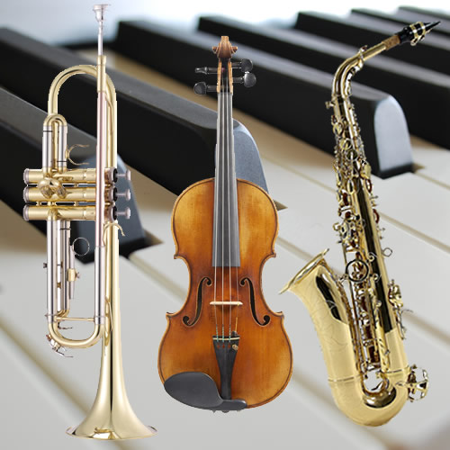
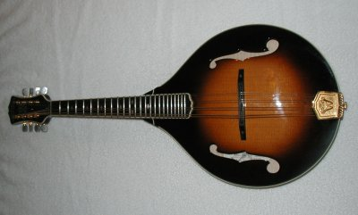

Music is everywhere. For instance; when you're outside and there's wind, it creates some type of music. This is what makes the world of music very diverse as it can be anything from anywhere.
Instrumental music has been apart of human life for thousands of years. People have played, and created music for thousands of years. During the early age of man kind we used string instruments such as the mandolin. In the current day, commonly played instruments include the; trumpet, piano, violin, and saxophone.
 